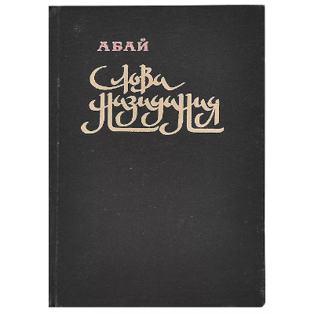
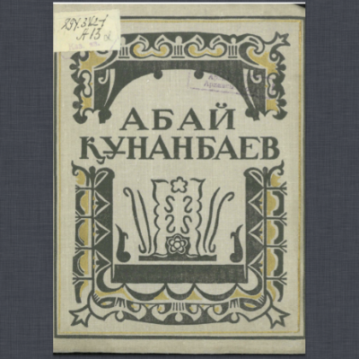
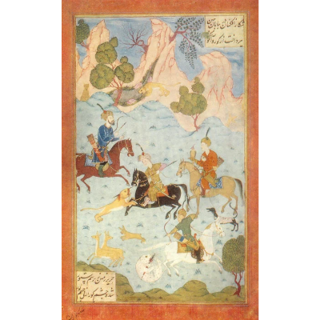

Слова назидания
Фундаментальное произведение казахского акына и просветителя Абая Кунанбаева, которое состоит из 45 кратких притч и философских трактатов.
Подробнее

Масгуд
В поэме «Масгуд» излагается мысль о необходимости приобретения знаний. Она провоцирует читателя учиться, получать знания и развивать мышление.
Подробнее

Искандер
В поэме «Искандер» Абай рассказывает об Александре Македонском, демонстрируя его алчность и стремление к завоеванию, которые так контрастируют с разумом в лице Аристотеля.
Подробнее